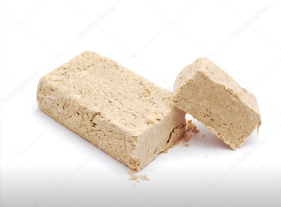

Anasayfa
İletişim
Hakkımda
Projeler
Galeri

Tepsileri Dolduran Pamuk Gibi Poğaça Tarifi İçin Malzemeler
- 2 yumurta akı
- 1 su bardağı ılık süt
- 1 su bardağı sıvı yağ
- 1 su bardağı ılık su
- 1 paket instant maya
- 4 yemek kaşığı şeker
- 5,5-6 su bardağı un
- 1 yemek kaşığı tuz
Arası İçin:
Üzeri İçin:
- Yumurta sarısı
- 2-3 yemek kaşığı Sıvı yağ
Tepsileri Dolduran Pamuk Gibi Poğaça Tarifi Nasıl Yapılır?
- Hamurumuzu hazırlamak için yoğurma kabına sarılarını üzeri için ayırdığımız yumurta aklarını alalım.
- Daha sonra üzerine süt, sıvı yağ, ılık su, maya ve şekeri alalım ve karıştıralım. Ben bu tarifimde 200 ml’lik klasik su bardaklarından kullandım.
- Unumuzu yavaş yavaş kontrollü bir şekilde karıştırma kabımıza ekleyelim. Üzerine tuzu da ekledikten sonra spatula yardımı ile karıştıralım.
- Hamurumuz katılaştıktan sonra tezgaha alalım ve elimizle yoğurmaya başlayalım.
- Güzelce kıvam alan hamurumuzu tekrar yoğurma kabına alarak üzerini streçleyelim ve temiz bir örtü ile sararak yaklaşık 1,5 saat kadar mayalanmaya bırakalım.
- Mayası gelen hamurumuzun üzerini açalım ve un serptiğimiz tezgaha alalım. Hamurumuzun havasının çıkması için 1-2 kere daha yoğuralım.
- Yoğurduktan sonra hamurumuzu kesme aşamasına geçelim. Hamurumuzu 20 eşit parçaya ayıralım ve elimizle beze haline getirelim. Hamurunuzu keserken siz yapacağınız poğaça büyüklüğüne göre beze boyutlarını ayarlayabilirsiniz.
- Bezenin birini alarak elimizle hafifçe genişletelim, içerisine iç harcından yerleştirerek hamurun uç kısımlarını birleştirerek elimizle yuvarlayalım. Ben iç harç olarak kaşar peyniri kullandım ancak siz dilediğiniz iç harcını kullanabilirsiniz.
- Tüm bezelerimiz bitene kadar bu işleme devam edelim ve hazır hale getirdiğimiz poğaçalarımızı pişirme kağıdı serdiğimiz fırın tepsisine dizelim.
- Tekrar tepsi mayası için poğaçalarımızı bekletelim. 50°C çalıştırdığımız fırında 15-20 dakika kadar mayalanmaya bırakalım. Dilerseniz üzerini temiz bir bez ile örterek de 45 dakika kadar bekletebilirsiniz.
- Ayırdığımız yumurta sarılarının içerisine sıvı yağ ekleyelim ve karıştıralım. Tepsi mayası gelen poğaçaların üzerine yumurta sarısını sürelim.
- Son olarak çörek otu ve susam serperek alt üst ayarda çalıştırdığımız 185°C fırında yaklaşık 20 dakika kadar kontrollü bir şekilde pişmeye bırakalım.
- Pişen poğaçalarımızı fırından çıkartarak ilk sıcağı çıktıktan sonra servis edelim. Afiyet olsun.

Saray Helvası Tarifi İçin Malzemeler
- 4 su bardağı un
- 200 gr margarin
- 7 yemek kaşığı pudra şekeri
Saray Helvası Tarifi Nasıl Yapılır?
- Öncelikle unumuzu geniş bir tavaya alıp, kısık ateşte 15 dakika kadar kavuralım sürekli karıştırarak hafif pembeleşince ocaktan alalım.
- Margarini ayrı bir tavada eritelim, kavurduğumuz un soğuduktan sonra bir kaba eleyelim çünkü kavururken topaklanabilir.
- Daha sonra unumuzun üzerine eritilmiş margarini dökelim ve 7 yemek kaşığı pudra şekerini de ekledikten sonra güzelce karıştıralım, harcımız ıslak deniz kumu gibi olmalı.
- Daha sonra bir borcama döküp, bardak yardımı ile iyice bastırıp, düzeltelim. Baklava şeklinde kesip buzdolabında dinlendirelim ve hazır deneyecek olanlara afiyet olsun
İmambayıldı Yapımı Tarifi İçin Malzemeler
- 7 adet patlıcan
- 2 adet büyük boy soğan
- 3 adet yeşil biber
- 3 adet domates
- 6 diş sarımsak
- Yarım demet maydanoz
- 3 yemek kaşığı sıvı yağ
- 1 çay kaşığı pul biber
- Yarım çay kaşığı karabiber
- 1 tatlı kaşığı tuz
- 1 tatlı kaşığı domates salçası
- 1 su bardağı sıcak su (200 ml)
- Çeri domates
İmambayıldı Yapımı Tarifi Nasıl Yapılır?
- Patlıcanları alacalı soyarak yarım saat kadar tuzlu suda bekletin.
- İç harcı için soğanları piyazlık doğrayın, 2-3 yemek kaşığı sıvı yağ ile tavaya alın ve kavurmaya başlayın.
- 5 dakika kadar soğanlar kavrulduktan sonra küçük doğranmış biberleri ve sarımsakları ilave edin, bir süre daha kavurun.
- Biberler diriliğini kaybedince küçük küçük doğranmış domates, baharatlar ve tuzu da ekleyerek domatesler suyunu biraz çekene kadar kavurmaya devam edin.
- İnce kıyılmış maydanozu ekleyerek ocaktan alın.
- Tuzunu akıtıp, havlu kağıt ile kuruladığımız patlıcanları bol sıvı yağda çevirerek kızartın.
- Kızaran patlıcanların yağının fazlasını alması için havlu kağıda alın.
- Fazla yağı süzüldükten sonra fırın kabına aldığınız patlıcanların üzerini boydan çizgi şeklinde kesin. İçlerini dikkatli bir şekilde açın.
- İçlerine hazırladığınız iç harcından doldurun.
- Süslemek için üzerine çeri domatesler yerleştirin ve son olarak sıcak suda çözdürdüğünüz salçayı yemeğin üzerine gezdirin.
- Hazır olan imambayıldıları önceden 190 derece ısıtılmış fırında 40 dakika pişirin.
- Sürenin sonunda ince kıyılmış maydanozla süsleyerek servis edin. Afiyet olsun!